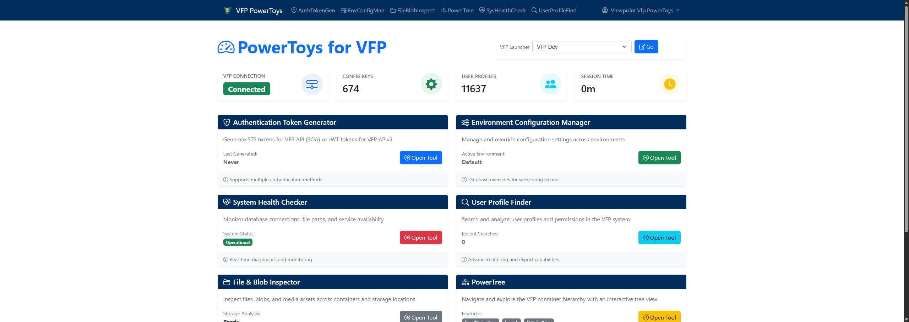

Trimble · Since 2018
Jonathan Carling
Lead Software Engineer
I build dependable enterprise software for the people and projects that keep the world moving. My work is focused on Viewpoint for Projects, with an emphasis on .NET and Azure. I'm exploring Agentic AI to streamline development workflows and solve practical engineering challenges.
Selected work
Internal Projects
Tools and utilities for project delivery and development.